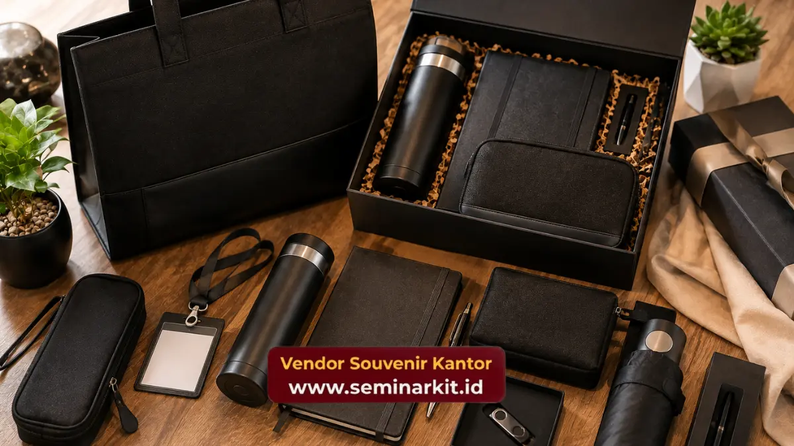

Paket seminar kit eksklusif adalah kumpulan merchandise korporat premium yang dirancang khusus untuk seminar, pelatihan, dan acara resmi perusahaan.
Paket ini umumnya terdiri dari tas, notebook, alat tulis, dan tumbler dengan kualitas material terpilih. Perusahaan memilihnya untuk memperkuat kesan profesional di mata peserta dan mitra bisnis.
- Paket seminar kit eksklusif menggabungkan fungsi dan estetika untuk mendukung kelancaran acara sekaligus memperkuat citra merek.
- Komponen umum meliputi tas seminar, notebook, pulpen, tumbler, dan flashdisk dengan finishing premium.
- Pemilihan material dan desain memengaruhi persepsi peserta terhadap kredibilitas penyelenggara acara.
- Paket ini dapat disesuaikan dengan tema, warna korporat, dan logo perusahaan.
- Pemesanan paket seminar kit eksklusif kini dapat dilakukan secara praktis melalui vendorsouvenirkantor.web.id.
Apa Itu Paket Seminar Kit Eksklusif dan Mengapa Penting untuk Acara Korporat?
Paket seminar kit eksklusif adalah satu set merchandise fungsional bertema profesional yang diberikan kepada peserta seminar, workshop, atau pelatihan korporat.
Paket ini penting karena menjadi representasi awal dari kualitas dan keseriusan penyelenggara acara.
Kesan pertama peserta terhadap sebuah acara sering kali terbentuk sejak momen registrasi, saat mereka menerima seminar kit di tangan.
Tas yang kokoh, notebook dengan sampul rapi, dan pulpen yang nyaman digenggam menciptakan persepsi bahwa acara tersebut dikelola secara profesional.
Sebaliknya, seminar kit dengan kualitas seadanya dapat menurunkan ekspektasi peserta terhadap keseluruhan acara, bahkan sebelum sesi pertama dimulai.
Bagi perusahaan atau instansi penyelenggara, paket ini juga berfungsi sebagai media branding berjalan.
Logo dan identitas visual perusahaan yang tercetak rapi pada setiap komponen kit akan terus terlihat oleh peserta selama acara berlangsung, bahkan setelah acara selesai jika barang tersebut masih digunakan sehari-hari.
Komponen Utama dalam Paket Seminar Kit Premium
Paket seminar kit premium umumnya terdiri dari lima hingga tujuh item fungsional yang dipilih berdasarkan kebutuhan peserta selama acara berlangsung, mulai dari tas hingga perlengkapan mencatat.
Komponen yang paling umum ditemukan dalam paket seminar kit eksklusif antara lain:
Tas seminar. Berfungsi sebagai wadah utama sekaligus item yang paling terlihat. Tas dengan bahan kanvas premium, kulit sintetis, atau parasut tebal memberikan kesan tahan lama dan layak pakai kembali di luar acara.
Notebook atau buku catatan. Menjadi media utama peserta untuk mencatat materi. Sampul hardcover dengan emboss logo perusahaan menambah nilai eksklusivitas.
Pulpen premium. Alat tulis yang nyaman digunakan dalam waktu lama, biasanya berbahan metal atau kayu dengan finishing matte.
Tumbler atau botol minum. Item yang paling sering dipakai ulang oleh peserta setelah acara, sehingga memperpanjang usia paparan brand perusahaan.
Flashdisk atau ID card holder. Melengkapi kebutuhan teknis dan administratif peserta selama acara berlangsung.
Kombinasi item ini dapat disesuaikan dengan anggaran, tema acara, dan jumlah peserta agar hasil akhir tetap proporsional dan efisien.
Mengapa Perusahaan Memilih Seminar Kit Eksklusif Dibanding Souvenir Standar?
Perusahaan memilih seminar kit eksklusif karena paket ini menawarkan kombinasi fungsi praktis dan nilai branding yang lebih kuat dibanding souvenir standar yang sifatnya umum dan mudah dilupakan.
Souvenir standar seperti gantungan kunci atau notes tipis memang lebih ekonomis, namun daya tahan dan daya guna jangka panjangnya terbatas.
Seminar kit eksklusif dirancang agar tetap relevan digunakan peserta jauh setelah acara berakhir, baik di lingkungan kerja maupun kegiatan sehari-hari.
Selain itu, seminar kit eksklusif memberikan fleksibilitas kustomisasi yang lebih luas. Perusahaan dapat menyesuaikan warna, material, dan tata letak logo agar selaras dengan identitas visual korporat, sesuatu yang sulit dicapai dengan souvenir generik yang diproduksi massal tanpa personalisasi.

Faktor Kualitas yang Menentukan Kesan Premium pada Seminar Kit
Kesan premium pada seminar kit ditentukan oleh tiga faktor utama, yaitu pemilihan material, presisi teknik cetak logo, dan konsistensi desain antar item dalam satu paket.
Material menjadi faktor paling menentukan. Kain kanvas tebal, kulit sintetis berkualitas, dan logam anti karat pada pulpen memberikan sensasi berbeda dibanding bahan tipis atau plastik ringan. Peserta dapat merasakan perbedaan kualitas hanya dari sentuhan pertama.
Teknik cetak logo juga berperan besar. Metode seperti bordir, emboss, atau sablon digital presisi tinggi menghasilkan tampilan logo yang tajam dan tahan lama, dibandingkan cetak sablon manual yang mudah pudar setelah beberapa kali pemakaian.
Terakhir, konsistensi desain antar item memastikan seluruh paket terlihat sebagai satu kesatuan yang terkurasi, bukan kumpulan barang yang dipadukan secara acak.
Warna, tipografi, dan penempatan logo yang seragam pada tas, notebook, dan tumbler memperkuat kesan bahwa perusahaan memperhatikan detail hingga level terkecil.
Bagaimana Memilih Isi Paket Seminar Kit Sesuai Jenis Acara?
Isi paket seminar kit sebaiknya disesuaikan dengan durasi, format, dan tujuan acara, misalnya pelatihan satu hari membutuhkan item berbeda dibanding konferensi multi-hari atau workshop teknis.
Untuk pelatihan singkat setengah hari hingga satu hari, kombinasi tas, notebook, dan pulpen umumnya sudah mencukupi kebutuhan peserta.
Acara dengan durasi lebih panjang, seperti konferensi dua hingga tiga hari, dapat dilengkapi dengan tumbler, flashdisk berisi materi digital, dan ID card holder untuk mendukung kelancaran mobilitas peserta.
Jenis acara teknis seperti workshop pelatihan produk atau sertifikasi profesi biasanya memerlukan tambahan item pendukung seperti map dokumen atau folder khusus untuk menyimpan modul dan sertifikat.
Penyesuaian ini memastikan setiap komponen dalam paket benar-benar terpakai, bukan sekadar pelengkap yang berakhir tidak digunakan.
Apa Saja Kesalahan Umum dalam Pengadaan Seminar Kit Korporat?
Kesalahan umum dalam pengadaan seminar kit korporat meliputi pemilihan material yang terlalu murah, desain logo yang tidak proporsional, serta ketidaksesuaian jumlah item dengan kebutuhan aktual peserta acara.
Salah satu kesalahan paling sering terjadi adalah memprioritaskan harga murah tanpa mempertimbangkan daya tahan material.
Barang yang cepat rusak justru dapat mencerminkan citra buruk terhadap penyelenggara acara, meskipun anggaran yang dikeluarkan lebih rendah.
Kesalahan lain adalah logo yang dicetak terlalu besar, terlalu kecil, atau tidak sejajar dengan elemen desain lain pada produk, sehingga tampilan terkesan kurang rapi.
Selain itu, banyak penyelenggara acara yang memesan jumlah item secara seragam tanpa mempertimbangkan variasi kebutuhan, misalnya menyediakan flashdisk untuk seluruh peserta padahal materi acara sudah dibagikan secara digital melalui email.
Berapa Nilai Investasi yang Tepat untuk Seminar Kit Eksklusif bagi Branding Perusahaan?
Nilai investasi seminar kit eksklusif sebaiknya disesuaikan dengan skala acara dan target audiens, karena paket ini berfungsi ganda sebagai kebutuhan operasional sekaligus media branding jangka panjang.
Investasi pada seminar kit eksklusif umumnya dianggap sepadan ketika perusahaan mempertimbangkan durasi pemakaian barang oleh peserta setelah acara selesai.
Tas dan tumbler berkualitas dapat digunakan hingga bertahun-tahun, sehingga paparan logo perusahaan berlangsung jauh lebih lama dibandingkan media promosi konvensional yang bersifat sekali pakai.
Perusahaan dapat menyesuaikan anggaran dengan memilih kombinasi item sesuai prioritas, misalnya memfokuskan kualitas premium pada tas dan notebook sebagai item utama.
Sementara item pelengkap seperti flashdisk disesuaikan dengan anggaran yang tersedia. Pendekatan ini menjaga keseimbangan antara kesan eksklusif dan efisiensi biaya.
Bagaimana Proses Kustomisasi Paket Seminar Kit Eksklusif Dilakukan?
Proses kustomisasi paket seminar kit eksklusif umumnya dimulai dari penentuan tema dan warna korporat, dilanjutkan dengan pemilihan kombinasi item, lalu diakhiri dengan proses cetak logo sesuai teknik yang dipilih.
Tahap pertama biasanya melibatkan diskusi mengenai identitas visual perusahaan, termasuk warna dominan, jenis font pada logo, dan nuansa acara yang ingin ditonjolkan.
Informasi ini menjadi dasar untuk menentukan kombinasi material dan warna item yang akan digunakan pada seluruh komponen paket.
Setelah tema disepakati, tahap berikutnya adalah pemilihan kombinasi item sesuai kebutuhan acara, baik dari sisi jumlah peserta maupun durasi kegiatan.
Pada tahap ini, perusahaan dapat menentukan prioritas item utama seperti tas dan notebook, sementara item pelengkap disesuaikan dengan anggaran yang tersedia.
Tahap terakhir adalah proses produksi dan cetak logo, di mana teknik seperti emboss, bordir, atau sablon digital diterapkan sesuai jenis material yang digunakan.
Sebelum memasuki produksi massal, biasanya disediakan contoh atau mockup desain agar hasil akhir sesuai dengan ekspektasi perusahaan sebelum acara berlangsung.
Proses ini dirancang agar setiap perusahaan dapat memperoleh paket seminar kit yang benar-benar mencerminkan identitas mereknya, bukan sekadar produk generik yang ditempeli logo secara asal.
Semakin matang perencanaan kustomisasi, semakin optimal pula hasil akhir yang diterima peserta acara.
Paket seminar kit eksklusif bukan sekadar pelengkap acara, melainkan investasi branding yang berdampak langsung pada persepsi peserta terhadap kualitas penyelenggaraan.
Material premium, desain konsisten, dan kesesuaian komponen dengan kebutuhan acara menjadi kunci utama keberhasilan paket ini.
Bagi perusahaan atau instansi yang ingin menghadirkan kesan profesional sekaligus memperkuat identitas merek di setiap acara, paket seminar kit eksklusif dari vendorsouvenirkantor.web.id siap disesuaikan dengan kebutuhan dan anggaran acara Anda.
Konsultasikan kebutuhan seminar kit perusahaan Anda sekarang melalui vendorsouvenirkantor.web.id dan wujudkan acara yang berkesan sejak momen pertama peserta tiba.

Banner promosi: klik gambar untuk langsung terhubung ke WhatsApp tim sales.